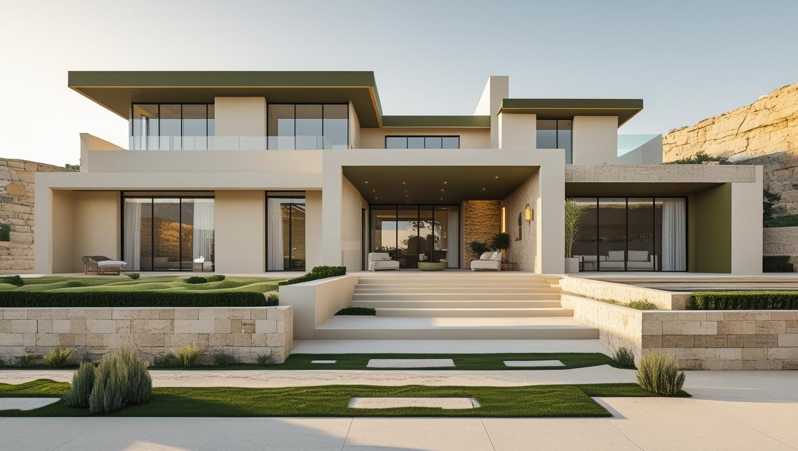

İstanbul Bağcılar Profesyonel Boya Ustası
20 yıllık tecrübemizle Bağcılar'da apartman dairesi, merdiven boşluğu ve iş yeri boyası yapıyoruz. Güneşli'deki ofisten Yıldıztepe'deki daireye kadar yüzeyi keşifte görüp yazılı teklif hazırlıyoruz.
Bağcılar'da Boya Badana: Yoğun Apartman Stoğu ve Ortak Alanlar
Bağcılar boyacı talebinin büyük kısmı çok katlı, yoğun apartman stoğundan geliyor. İlçede daire boyamanın yanı sıra apartman ortak alanı, merdiven boşluğu ve kat holü işleri düzenli olarak talep ediliyor.
Bu yapı tipinde en sık karşılaştığımız kalemler kabarmış eski boyanın raspası, duvar ve tavan çatlakları ile ıslak hacim çevresindeki dökülmeler. Bağcılar boya badana tekliflerinin arasındaki farkın büyük kısmı boya markasından değil, bu hazırlık kaleminin teklife dâhil olup olmamasından geliyor.
Ortak alan işlerinde kat sakinlerinin giriş çıkışını engellememek için bölüm bölüm ilerliyor, çalışılan katı işaretleyip zemini ve korkuluğu koruyoruz. Apartman yönetimiyle çalışma saatlerini önceden konuşuyoruz.
Hizmetlerimiz

İç Mekan Boyama
Bağcılar'da iç cephe boyamayı içinde yaşanan bir dairede ya da çalışmaya devam eden bir iş yerinde yapıyorsak oda sırasını ve eşyaların toplanacağı yeri keşifte birlikte belirliyoruz. Tamir gerektiren duvar ve tavan bölümleri de bu sırada işaretlenir.
- Eşyalı dairede oda oda uygulama
- Tavan ve köşe çatlaklarında dolgu
- Hol ve koridorda silinebilir boya
- Kapı kasası ve süpürgelik koruması

Dış Cephe Boyama
Bağcılar'daki apartman cephelerinde boyadan önce sıva çatlakları, balkon altları ve pencere söveleri kontrol edilir. Sokak dar ve binalar birbirine yakınsa iskelenin nereye kurulacağı da iş planının parçası olur.
- Sıva çatlağı ve kabarma onarımı
- Balkon altı ve söve kontrolü
- Yüzeye göre astar ve cephe boyası
- Kat malikleri için yazılı teklif

Dekoratif Boyama
Bağcılar'daki mağaza ve ofislerde dekoratif boya, tabelayı ve marka rengini tamamlayan bir yüzey olarak planlanabilir. Sık temas edilen alanlarda dokulu yüzeyin kolay temizlenip temizlenmeyeceği de seçime dahil edilir.
- Marka rengine göre ton seçimi
- Taş ve tuğla efektli duvar
- Temizlenebilir dokulu yüzey
- Kartonpiyer ve kapı boyama
Fiyat Tablosu
| Hizmet Türü | Metrekare Fiyatı | Ortalama Süre (100m²) | Garanti |
|---|---|---|---|
| İç Cephe Boyama | 100-200 TL | 2-3 Gün | Uygulama kapsamına göre |
| Dış Cephe Boyama | 180-280 TL | 3-5 Gün | Uygulama kapsamına göre |
| Dekoratif Boyama | 250-500 TL | 4-7 Gün | Uygulama kapsamına göre |
| Ofis Boyama | 150-250 TL | 2-4 Gün | Uygulama kapsamına göre |
Metrekare fiyatları yaklaşık ön değerlendirme aralığıdır. Uygulanacak ölçüm yöntemi, boyanacak alanın kapsamı, yüzey durumu, tamirat ihtiyacı, kat sayısı ve malzeme seçimi keşif sırasında netleştirilir.
Dış cephe boya fiyatları uygulama alanı için yaklaşık 180–280 TL/m² aralığındadır. Kesin hesaplama yöntemi ve teklif; yüzey durumu, bina yüksekliği, erişim veya iskele ihtiyacı, tamirat kapsamı, boya sistemi ve uygulanacak kat sayısına göre keşif sırasında netleştirilir.
Uygulama kapsamına göre işçilik garantisi sağlanır. Garanti kapsamı ve istisnaları teklif veya iş sözleşmesinde belirtilir.
Bu rakamlar İstanbul Boyacılık'ın 2026 gösterge fiyat aralığıdır. Bir piyasa ortalaması değildir. Kesin fiyat; yüzey durumu, hazırlık ve tamirat miktarı, uygulanacak kat sayısı, seçilen malzeme sınıfı, ulaşım ve kat koşulları ile evin eşyalı mı boş mu olduğu keşifte görüldükten sonra belirlenir.
Bağcılar'da aralığı yukarı taşıyan ana kalem çıkan tamirat miktarı oluyor: raspa, çatlak ve tavan onarımı. Ortak alan işlerinde ise yüzey alanı ve çalışmanın bölüm bölüm ilerlemesi süreyi belirliyor.
Bağcılar'da Altında Dükkân veya Atölye Olan Apartmanda Daire Boyama
Zemin ya da bodrum katında dükkân, atölye veya depo bulunan bir apartmanda daire boyanırken iş yalnız dairenin içinde planlanmaz; merdiven, bina girişi ve alttaki işletmenin çalışma saati de hesaba katılır.
Bağcılar'da konut ile küçük iş yerlerinin aynı binayı paylaşması sık rastlanan bir durumdur. Bu binalarda malzemenin giriş katında bekletilmesi, dükkân önünün kapanması ya da atölyeden gelen tozun ıslak boyaya yapışması gibi küçük ama işi uzatan sorunlar çıkabilir. Bağcılar boya ustası olarak bu konuları keşifte konuşuyoruz:
- Giriş ve dükkân önü: Malzeme indirilirken dükkân kapısı ve vitrin önü kapatılmaz; kovalar ve örtüler bekletilmeden daireye çıkarılır.
- Atölye tozu: Alt katta toz çıkaran bir atölye varsa havalandırma tozun gelmediği yönden sağlanır; boya kururken daire kapısı kapalı tutulur.
- İşletmeyle haberleşme: Raspa gibi gürültülü işler için yalnız apartman yönetimiyle değil, alttaki işletmeyle de önceden konuşulur.
Güneşli ve Mahmutbey'de Ofis, Mağaza ve Depo Boyama
Güneşli'deki iş merkezlerinde ve Mahmutbey'deki İSTOÇ gibi toptan ticaret alanlarında boya işi, iş yerinin çalışma düzenini olabildiğince az aksatacak bir sırayla planlanmalıdır.
Ofis katlarında hangi bölümün hangi sırayla boyanacağı, masaların ve elektronik cihazların nasıl örtüleceği keşifte konuşulur; çalışma saatleri iş yerinin düzenine göre belirlenir. Mağaza ve depolarda raf arkasındaki duvarlar, koli ve transpalet sürtünmesine açık alt bölümler ve yüksek tavanlar ayrı kalem olarak ele alınır.
Sık temas edilen koridor ve kapı çevrelerinde silinebilir bir iç cephe boyası seçmek, kirlenen yüzeyin yeniden boyanmadan temizlenebilmesini sağlar. İş yeri işlerinde maliyeti etkileyen kalemler için dükkân ve iş yeri boyama fiyatları rehberimize bakabilirsiniz.
Bağcılar'da Apartman Dış Cephesi: Kat Malikleri Kararı ve İskele İzni
Dış cephe boyası tek bir dairenin değil bütün binanın işidir: karar kat malikleri tarafından alınır, iskele kaldırıma ya da yola taşacaksa belediyeden izin gerekebilir.
Karar için gereken çoğunluk ve masrafın paylaşımı yönetim planına ve kat mülkiyeti mevzuatına göre değişebilir; bu konuda apartman yönetiminizden bilgi almanız gerekir. Toplantıya cephedeki çatlak, kabarma ve dökülme noktalarının fotoğraflarıyla gitmek, kat maliklerinin neye karar verdiğini netleştirir.
Binaların birbirine yakın olduğu dar sokaklarda iskele komşu parsele ya da yaya yoluna taşabilir. Böyle bir durumda komşu bina yönetimiyle önceden konuşmak ve belediyenin izin sürecini erkenden öğrenmek takvimi korur. Cephe işini yağışlı ve sert rüzgârlı günlerin dışında planlamak da boyanın düzgün kurumasına yardımcı olur.
İskele, onarım ve boya sistemi kalemlerinin maliyete etkisini 2026 dış cephe boyama fiyatları yazımızda bulabilirsiniz.
Bağcılar Boya Badana Ustasından Teklif İsterken Hazırlamanız Gerekenler
Keşiften önce birkaç bilgiyi hazırlamanız, Bağcılar boya badana ustası olarak size daha net bir iş planı ve yazılı teklif sunmamızı kolaylaştırır.
- Boyanacak oda sayısı ve tavanların da işe dahil olup olmadığı
- Mevcut renkten farklı, özellikle koyudan açığa bir renk geçişi isteyip istemediğiniz
- Nem lekesi, çatlak ya da kabarma gördüğünüz noktaların WhatsApp'tan gönderebileceğiniz fotoğrafları
- Dairenin boyadan önce boşaltılıp boşaltılmayacağı
- İş yeriyse çalışma saatleri ve boyanacak bölümün hangi günlerde boşaltılabileceği
Sayfadaki fiyat tablosu hizmet türüne göre metrekare başına gösterge aralıkları verir. Kesin tutar, bu bilgiler ve yüzeyin gerçek durumu keşifte görüldükten sonra yazılı teklifle paylaşılır.
Bağcılar’da Hizmet Verdiğimiz Mahalleler
Bağcılar boyacı ihtiyacınız için Güneşli ve Mahmutbey'deki iş yerlerinden Yıldıztepe, Kirazlı ve Demirkapı'daki apartmanlara kadar aşağıdaki mahallelerde keşif yapıyoruz:
Bağcılar Mahalleleri
- Bağcılar 100. Yıl Mahallesi
- Bağcılar 15 Temmuz Mahallesi
- Bağcılar Bağlar Mahallesi
- Bağcılar Barbaros Mahallesi
- Bağcılar Çınar Mahallesi
- Bağcılar Demirkapı Mahallesi
- Bağcılar Fatih Mahallesi
- Bağcılar Fevzi Çakmak Mahallesi
- Bağcılar Göztepe Mahallesi
- Bağcılar Güneşli Mahallesi
- Bağcılar Hürriyet Mahallesi
- Bağcılar İnönü Mahallesi
- Bağcılar Kazım Karabekir Mahallesi
- Bağcılar Kemalpaşa Mahallesi
- Bağcılar Kirazlı Mahallesi
- Bağcılar Mahmutbey Mahallesi
- Bağcılar Merkez Mahallesi
- Bağcılar Sancaktepe Mahallesi
- Bağcılar Yavuz Selim Mahallesi
- Bağcılar Yenigün Mahallesi
- Bağcılar Yenimahalle Mahallesi
- Bağcılar Yıldıztepe Mahallesi
Google Haritalar'daki Müşteri Yorumlarımız
Yorumlar, İstanbul Boyacılık'ın Google Haritalar işletme profilinden olduğu gibi alınmıştır. Bağcılar dahil İstanbul genelindeki işlerimize ait yorumların tamamını Google Haritalar profilimizde okuyabilirsiniz.
"Enes beye çok tşk ettim yönlendirigi ustalar gayet güzel işçilik yaptılar poşet olsun süpürgelik üstüne band olsun hepsini yaptılar ve işin sonu mükemmel hiç kirletme olmadı gönül rahatlığıyla tavsiye ediyorum tekrardan çok teşekkürler ediyorum gayet memnun kaldım"
Mehmet Çevik
Google Haritalar yorumu
"Baran ustadan çok memnun kaldık, ellerine emeğine sağlık hakkını helal etsin. Temizliğe özene çok dikkat eden ince işçilik çalışan birisi. Mutlaka çevreme de önereceğim kendisini. 🙏"
Yaren Sert
Google Haritalar yorumu · İç cephe boyama
"Firma ile Mayıs 2026 başında çalışma imkanım oldu gelen Baran Usta işinin gayet ehli hızlı ve tertemiz işini bitirdi fiyatları gayet uygun çalışma performansı gayet yüksek daireyi pırıl tertemiz yapıp çıktılar Baran Usta ve yanındaki arkadaşlara teşekkür ederim"
Tamer Özkenel
Google Haritalar yorumu
Faydalı Bağlantılar
Bağcılar boya badana planında fiyat hesabı, boya markası ve yakın ilçe seçeneklerini birlikte değerlendirmek için aşağıdaki rehberler kullanılabilir.
Bağcılar Boya Badana Hakkında Sık Sorulan Sorular
Bağcılar boyacı fiyatı neden adres görülmeden kesinleşmiyor?
Aynı metrekaredeki iki dairede hazırlık işi çok farklı olabilir: birinde boya katları yeterliyken diğerinde raspa, çatlak dolgusu ve tavan onarımı gerekir. Kat, asansör ve binaya malzeme girişi de işin süresini etkiler. Sayfadaki fiyat tablosu metrekare başına gösterge aralık verir; net tutar, yüzey yerinde görüldükten sonra yazılı olarak bildirilir.
Aynı apartmanda birkaç daireyi birlikte boyatmak mümkün mü?
Mümkün. Her daire ayrı ölçülür ve tamirat ihtiyacı ayrı yazılır, çünkü aynı binadaki iki dairenin yüzey durumu farklı olabilir. Daireler art arda planlandığında malzeme taşıma ve kurulum tekrarı azalır; bunun takvime ve teklife etkisini keşifte birlikte değerlendiriyoruz.
Mahmutbey'deki mağazamızın raflarını boşaltmadan boya yapılabilir mi?
Raflar duvardan biraz çekilebiliyorsa ürünler örtülerek arkadaki duvar boyanabilir. Sabit ve dolu raflarda önce raf arkasının boyanıp boyanmayacağına karar vermek gerekir; görünmeyen bölümleri kapsam dışında bırakmak işi kısaltabilir. Bu tercihi teklifte ayrıca belirtiyoruz.
Apartman ortak alanı boyamada karar nasıl alınıyor?
Ortak alan işleri kat malikleri kararıyla yürüyor. Biz yönetime yazılı teklif veriyoruz; teklifte yüzey alanı, hazırlık kapsamı, kat sayısı ve süre ayrı ayrı yazılı oluyor, böylece toplantıda karşılaştırılabiliyor.
Merdiven boşluğu boyanırken giriş çıkış kapanıyor mu?
Kapanmıyor. Bölüm bölüm ilerliyoruz: çalışılan katı işaretliyor, zemini ve korkuluğu örtüyor, geçiş için güzergâh bırakıyoruz. Yoğun saatlerde çalışmayı planın dışına alabiliyoruz.
Dairemde ıslak hacim çevresindeki dökülmeler için ne yapılıyor?
Banyo ve mutfak çevresindeki dökülmelerin arkasında çoğu zaman nem var. Kaynağı çözülmeden boyanan yüzey kısa sürede tekrar kabarıyor. Keşifte kaynağı değerlendirip önce çözülmesi gerekeni söylüyoruz, ardından uygun astar ve boya sistemini uyguluyoruz.
İletişim
İletişim Bilgileri
Telefon: 0507 832 29 12
E-posta: boyaustamistanbul@gmail.com
10+ Uzman Ustamızla Bağcılar ve çevresine hizmet veriyoruz.
Çalışma Saatleri: 7/24 (Pzt-Paz 00:00-23:59)